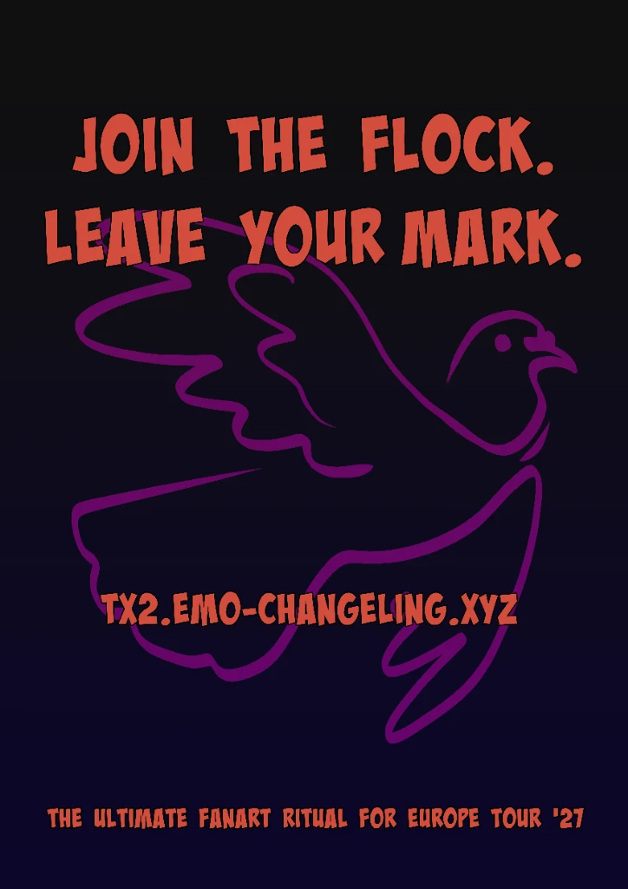
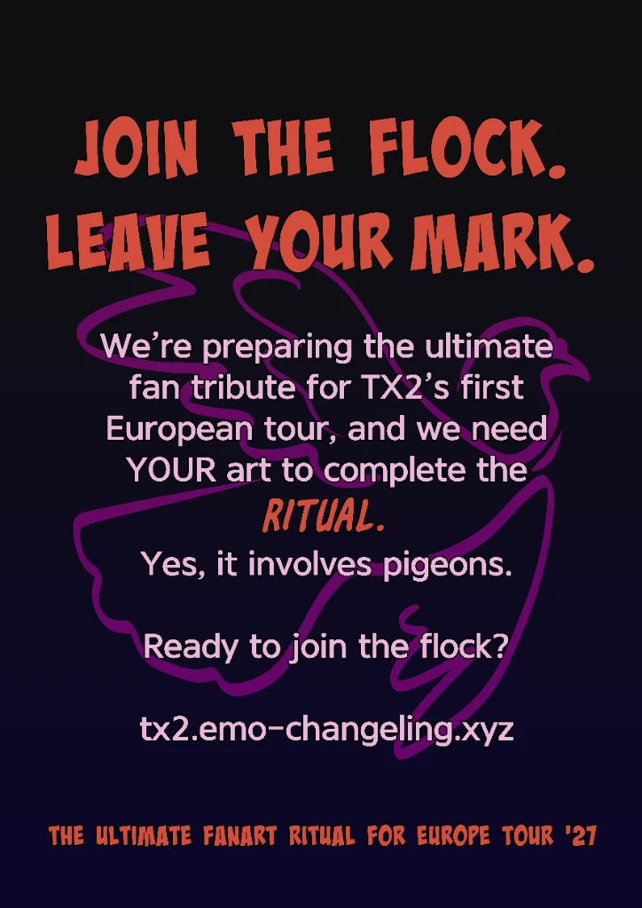

🎬 MEDIA I MATERIAŁY FANOWSKIE
Witaj w centrum multimedialnym Rytuału Gołębiowania TX2. Znajdziesz tutaj materiały wideo, zajawki shorts oraz klipy społeczności dokumentujące naszą akcję przed europejską trasą koncertową 2027.
TX2 - Wyróżnione Wideo YouTube
Wyróżniony materiał wideo prezentujący fanowską akcję Rytuału Gołębiowania TX2 przed europejską trasą 2027.
Co mają gołębie do kapitalizmu? YouTube
Komentarz wideo wyjaśniający symbolikę miejskich gołębi, motywy antykapitalistyczne i żart społeczności TX2.
TX2 - Nowy gołąb na Ścianie Szaleństwa (Dzięki Lena!) YouTube
Krótka prezentacja nowego gołębiego fanartu autorstwa Leny dodanego na Ścianę Szaleństwa.
TX2 Short Shorts
Pionowy materiał YouTube Short promujący Rytuał Gołębiowania TX2 przed europejską trasą 2027.
Klip Rytuału na TikToku TikTok
Społecznościowy klip TikTok z profilu @reverse.changeling zapraszający fanów do warszawskiej akcji plakatowej.
🎨 PLAKATY KAMPANII
Oficjalny oraz alternatywny plakat promocyjny Rytuału na europejską trasę 2027.

